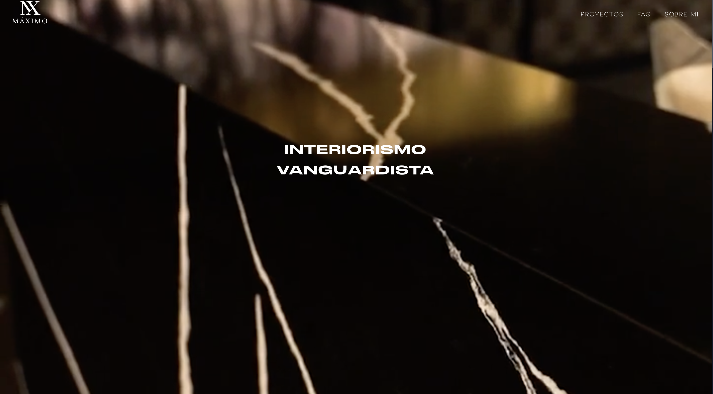

Design portfolio
A stronger public home.
maximo-interiorismo.netlify.app

Cleaner presentation
The work stays first.
Projects / FAQ / About

Inquiry path
Review leads to inquiry.
A clean route from portfolio proof to a conversation.
Review work
Trust proof
Consultation
Launch site
Maximo Interiorismo
Portfolio to consultation.